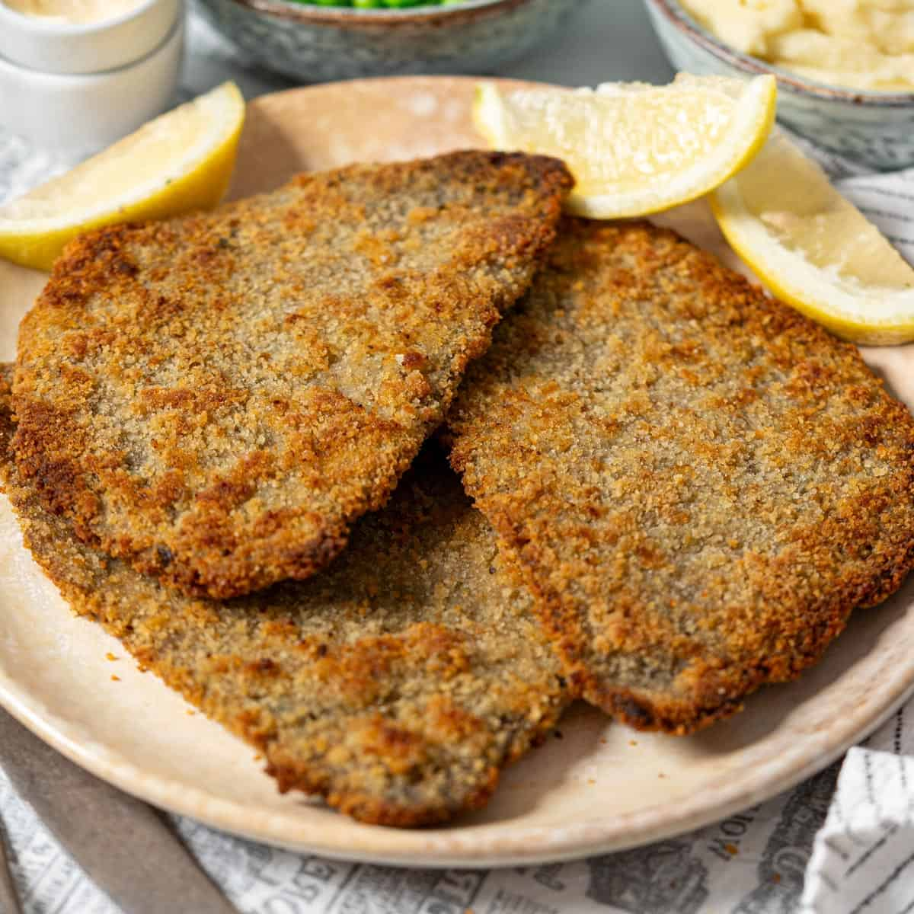

Home
Milanesa

Description
Similar to the Austrian wiener schnitzel, the Italian cotoletta alla Milanese, and the Japanese tonkatsu, the Argentinian milanesa is also a breaded cutlet shallow-fried in oil. The cutlet typically comes either from the round or from the eye of the round, which are lean cuts, meaning they have less fat, marbling, and sinew when compared to most other cuts of beef. Besides beef, milanesa can also be prepared with veal, pork, or be made vegetarian by using soy cutlets or eggplant instead. The first step when preparing milanesa is to prepare the meat, which means removing any fat or sinew to get as clean of cutlets as possible, which are then pounded with a mallet until a half a centimeter thick. The cutlets are then first dipped typically in a mixture of beaten eggs, chopped garlic, parsley, salt, and pepper, but, depending on the recipe, this mixture can also include mustard. Once soaked in the egg mixture, the cutlets are dredged in breadcrumbs and then shallow-fried in a pan until golden. The milanesa should be served warm, with just a drizzle of lemon juice and a side of mashed potatoes or fries. In Argentina, they also have variations on the basic milanesa, such as caballo, which is milanesa topped with an egg and milanesa a la napolitana, which has a topping of tomato salsa, ham, and mozzarella cheese.
Ingredients
- 1 1/2 lbs thinly sliced pieces of beef (Top round works best)
- 2 tbsp kosher salt (Divide in half for beef and the breadcrumb mixture)
- 2 tbsp ground black pepper (Divide in half for the beef and the breadcrumb mixture seasoning)
- 1 1/2 cups all purpose flour
- 3 eggs
- 2 cups plain bread crumbs
- 1 tsp ancho chile powder
- 1 tsp garlic powder
- 1 tsp dried Mexican oregano
- canola oil for frying (Amount depends on size of frying pan)
Steps
- In a large bowl or deep baking dish, season your beef with salt and pepper.
- In a pie plate, spread out the all-purpose flour. (Have a large plate ready for the breaded beef to rest before frying.)
- In a medium-sized bowl, whisk the eggs.
- In another pie plate, combine the plain breadcrumbs, ancho chile powder, salt, black pepper, garlic powder and dried oregano.
- Using your hands or kitchen tongs, place the beef one-by-one into breadcrumbs, turning to coat both sides. Next, dip the beef into the whisked eggs and finally into the breadcrumbs. Lightly pat the steaks so the coating sticks. Place the breaded beef aside on a plate.
- In a large, deep skillet, heat 1/2 inch of oil over medium-high heat. Make sure the oil is hot before placing the steaks. Fry about 2 minutes on each side until golden brown (this will happen faster than you think so don’t walk away) on both sides and cooked through. Place the steaks on paper towels to drain any excess oil before serving.